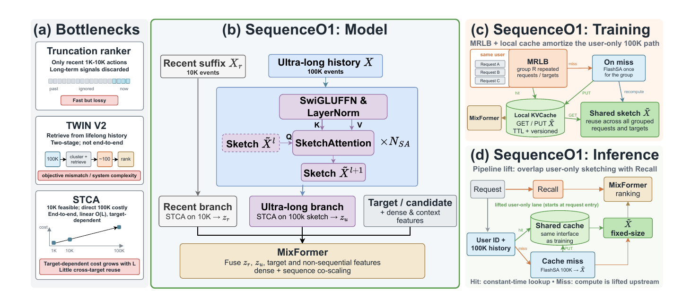

Meta 这篇论文给长序列排序换了一种结构，让多读历史和多堆层数成了两个可以分开调的旋钮：在 1 万条历史上，它的 NE 比 HSTU 好 0.19%，每次请求的前向计算量却少了 69.6%。现有模型把这两件事绑在一起：序列编码器每多读一条行为，每层都要多算一份；先挑相关行为再建模的做法只挑一次，后面的层看不到被漏掉的行为。论文提出的 LWR（Latent Workspace Ranker）把历史一直放在可以随时查的存储里。每个候选物品带一小组固定数量的向量，一部分由它自己的特征生成，一部分是训练学出来、所有候选共用的，可以看成它的草稿区，只有这组向量逐层往上传；每一层都由草稿区当前的内容生成几个查询，在完整的历史里按相关程度加权读取，读回的结果和排序特征交互后更新草稿区。历史变长只让每次读取变长，层数变多也不会让草稿区变大。多读历史和多堆层数可以分开加。
做长序列排序的团队值得读这篇，因为它给的是一个结构上的答案：历史放在模型外面随时查，只让固定大小的候选状态穿过各层，于是"加历史"和"加层数"成了两个互不牵连的旋钮。要分清它省的是什么。它省掉的是逐层传递的那份状态，读历史本身并不免费：每一层仍要对完整历史做一次 cross-attention，读的代价随历史长度线性增长，层数越多读的次数越多。证据都是 Meta 两个十亿级排序场景上的离线 NE。
它到底在解决什么问题？
设想一个用户有 1 万条历史行为，候选是一双跑鞋（示意）。前面的层可能先把跑鞋和她长期稳定的运动偏好对上；到了后面的层，模型可能更该看她这几天在做什么，比如最近连着看了马拉松报名和能量胶。论文的说法是，有用的历史会随着模型逐层加工而变化：早期的表示把候选和稳定偏好对上，后期的表示更侧重当前这次会话。
现有两类做法各有各的卡点：
| 做法（示意） | 历史怎么进模型 | 加历史的代价 | 加层数的代价 |
|---|---|---|---|
| 序列编码器（如 HSTU） | 每条行为都有自己的表示，在每一层里一起更新 | 每层都要多处理这些行为 | 每多一层，所有行为都要再算一遍 |
| 先挑再建模（DIN、SIM 一类） | 先按候选挑出或汇总相关行为，再做特征交互 | 只影响挑选那一步 | 后面的层只能用挑剩的那部分，漏掉的找不回来 |
| LWR | 历史留在外部存储，每层按需重新读 | 只让每次读取变长 | 草稿区大小不变，每层还能重读原始历史 |
用跑鞋的例子说，先挑再建模的模型如果在第一步按"运动"挑了 100 条，马拉松报名那几条恰好没挑上，后面的层再想看也看不到了。序列编码器能一直看到所有行为，代价是 1 万条行为的表示在每一层都要更新一遍。
整体结构：三个证据库、一个草稿区、一个存档

先把论文里的几个东西说清楚。
- 证据库（论文叫 typed evidence bank）：按来源分开存的原始信息，共三个。历史库是这次请求的用户行为序列，同一次请求的所有候选共用；上下文库是请求和用户的特征，包括稠密特征，也是共用的；匹配事件库是和这个候选匹配上的历史事件，每个候选一份，可以没有；论文对它只交代到这一层，即按候选私有、可选，挑选规则留给具体场景。
- 草稿区（论文叫 workspace）：每个候选一组 K 个向量。一部分由候选特征生成，另一部分是训练学出来的，对所有候选都一样，提供和内容无关的额外容量。只有它在层与层之间传递。
- 存档（论文叫 condensate archive）：除最后一层外，每层结束时把草稿区压成几个向量写进去，记录这一层是怎么把候选、读回的证据和排序特征组合起来的。
每一层做四步：
| 步骤 | 输入 | 做什么 | 输出 |
|---|---|---|---|
| Coordinate | 当前草稿区 | 同一个候选的 K 个向量之间做 self-attention | 交换过信息的草稿区 |
| Query | 草稿区、之前所有层的存档、本层学出来的几个固定向量 | 生成查询，按来源分好，每个库分到固定个数 | 每个库一组查询 |
| Reread | 每组查询、对应的证据库 | 多头 cross-attention，库里的向量同时当 key 和 value，从完整的库里按相关程度加权读回 | 每个库一组读回结果 |
| Interact | 草稿区、各库读回结果、存档、稠密特征 | 前三样拼成一组向量，连同稠密特征交给 Cross/FM 一类的显式特征交叉模块 | 下一层的草稿区，仍是 K 个向量 |
三个库在论文里都直接写成供 attention 读取的向量组。论文没说这些向量由什么编码得到、读取前有没有经过序列编码，只写到“打包好的历史”和“请求、用户特征（含稠密特征）”。所以能确定的是：每层读的是同一份、不随层改变的向量组。库本身不随层更新，各层读的都是同一份原始证据；其中历史库和上下文库由同一请求的候选共用，匹配事件库仍归每个候选私有。Interact 这一步论文给出的是公式：输入是拼起来的向量组和稠密特征，输出是 K 个向量的新草稿区，论文没说交叉模块内部怎样把交叉结果变回 K 个向量，只给了 Cross/FM 这个类别和输入输出的大小。最后一层输出一个固定宽度的向量，交给原有的 PLE 多任务模块和各任务预测头。关键分工是：证据库决定能读到多少，草稿区决定每层带着走多少，两者大小互不影响。
为什么每层都要重新读？
如果只在第一层读一次历史，LWR 就退化成先挑再建模，后面的层又只能用第一次读到的东西。重新读的意义在于查询会变：草稿区和存档每层都在变，由它们生成的查询也跟着变。早一层可以问一个宽泛的问题，比如"这个用户整体喜欢什么运动"；后一层已经做过一轮特征交互，可以针对这个候选追问，比如"最近几天有没有和跑步相关的行为"（示意）。
查询怎么生成？输入是一批向量：草稿区、之前的存档和本层学出来的几个固定向量。生成器把它们组合成一组查询，再按来源切开，每个库分到规定的个数（实验里每个库 24 个）。组合分两路相加：一路是固定的组合，每个查询是输入向量的一种加权和，权重训练学出来、对每个候选都一样；另一路的组合方式随输入内容变化，它的输出投影初始化为零；论文没说这一路具体怎样由输入内容算出组合权重，只给了它的作用和这个初始化。所以训练刚开始时查询完全由固定那一路给出，随内容变化的那一路从第一次更新起就能拿到梯度，再慢慢学进来。 Hoot 说

LWR 的贡献是让模型每一层都按新的查询重新读用户历史。查询由两路相加。示意：固定那一路是输入 1、2 按 0.6、0.4 加权，得 1.4；随内容变化那一路原始输出 3，再乘从 0 开始学的输出投影。拖动滑块看投影变大时查询怎么移动。 出处: 示意例子，对应论文 §3 查询生成
工程上还有一点：历史库和上下文库是整个请求共用的，同一次请求里的所有候选通过分组偏移去读同一份库，不用每个候选复制一份；匹配事件库是每个候选私有的，偏移保证一个候选读不到别的候选的私有库。
为什么还需要存档？
草稿区只有 K 个向量，每层的交互都会覆盖它。如果后面的层想知道"第二层当时得出了什么"，只靠草稿区是找不回来的。存档就是给这种需求准备的：每个非最后一层用一个学出来的压缩器，把交互后的草稿区压成 q_c 个向量追加进去。论文没说压缩器内部的结构，只给了它的输入和输出：K 个向量进，q_c 个向量出。它存的是这一层的结论，不是原始历史的副本。
论文实验里的模型有 5 层，每个非最后一层写 4 个存档向量。所以第 0 层读不到存档，第 1 层能读到 4 个，最后一层能读到前 4 层写的共 16 个。这说明存档的大小只随层数缓慢增加，和带着 1 万条行为的表示往上传相比小得多。
论文给的规模是：每个候选带着的状态是 ，其中 是草稿区向量数， 是层数， 是每层写的存档向量数， 是向量宽度。这里没有历史长度。历史长度只出现在读取那一步：一个长度为 的库配 个查询，每层的 attention 计算量是 。
实验结果
每个模型都用三天的线上数据训练，样本量在 300 亿到 500 亿条之间，再用紧接着的一天评估，所以评估数据都在训练数据之后。NE 越低越好。论文报的改进是两个 NE 之差乘以 100，比如 0.6841 减 0.6826 等于 0.0015，记作 0.15%；0.03% 以上的改进算作显著。
先看两个线上场景的整体对比，历史长度都是 3000 条。场景 2 的对照是 HSTU，场景 1 的对照是一个现有的内部基线，场景 1 报的是相对基线的差值：
| 场景和指标 | 对照 | LWR | 差异 |
|---|---|---|---|
| 场景 2 任务 A 评估 NE | 0.6841 | 0.6826 | −0.15% |
| 场景 2 任务 B 评估 NE | 0.6276 | 0.6251 | −0.25% |
| 场景 1 全局 NE 差值 | 0 | −0.08% | −0.08% |
| 场景 1 区域 NE 差值 | 0 | −0.09% | −0.09% |
两个场景上都超过了显著线，说明 LWR 在常规历史长度下已经不比现有模型差，后面的扩展实验才有意义。

多读历史时，层数固定。在 3K、5K、10K 历史上，LWR 比 HSTU 的 NE 分别好 0.11%、0.12%、0.19%，每次请求的前向计算量分别少 19.6%、48.2%、69.6%。这说明历史越长，LWR 不让历史穿过各层的好处越明显。在 10K 上，另一个内部基线（论文称 Internal Baseline 2）只比 LWR 好 0.01%，低于显著线，但每次请求要 136.28 GFLOP，LWR 是 52.69。在 2K 到 65K 的整个范围里，LWR 在短历史上落后于 Internal Baseline 1，从 12K 起在四种架构里排第一。
多堆层数时，历史固定在 10,240 条，层数按扩展实验基础深度的倍数报告，从 0.5 倍加到 8 倍，共 9 档；论文给出的只有倍数，横轴用每次训练实际测得的总计算量。四种架构都随层数单调变好，LWR 一共改进了 0.41%。这说明在历史不变的情况下，更深的草稿区确实能从同一份历史里读出更多东西。到 8 倍层数时，Internal Baseline 2 比 LWR 好 0.02%，同样低于显著线，但训练计算量是 LWR 的 3.5 倍。
两条路都可以选时，论文从每种架构的 117 个组合里挑出前沿，拟合 NE 随计算量下降的幂律。LWR 的指数是 0.845，HSTU 是 0.558，两个内部基线是 0.424 和 0.599。指数越大，多花的计算换来的 NE 下降越快。这说明在实验覆盖的配置里，沿着计算最省的那条前沿，LWR 的 NE 离它自己拟合出的下限缩得最快。由于每种架构的下限是分别拟合的，这个指数比的是下降速度，不能直接读成同样预算下谁的 NE 最低。
我认为它的局限
第一，省下的主要是状态，不是读取。论文自己也写明，读取量仍随历史长度增长、随层数重复。前向计算量的节省在 3K 历史上只有 19.6%，到 10K 才是 69.6%，历史不长的场景收益有限。
第二，对照里有两个匿名的内部基线，场景 1 的对照也只说是现有基线，外部读者很难判断它们和公开方法的关系。而且在 10K 历史和 8 倍层数上，Internal Baseline 2 的 NE 都和 LWR 差不多，LWR 的优势主要体现在计算量上（136.28 对 52.69 GFLOP）。
第三，实验只比较了整套架构。存档、草稿区里学出来的那部分向量、查询的自适应分支各贡献多少，无从得知。结果也全是离线 NE。
一个推荐团队可以怎么试
- 先在现有长序列排序模型上找一个历史长度已经被计算量卡住的场景，固定层数，把历史加长，看现有模型的 NE 和计算量怎么变，确认瓶颈真在"每层都要处理全部历史"。
- 做一个最小版本：草稿区加两三层，每层对历史库做一次 cross-attention，先不加存档，和现有模型在同样历史长度上比 NE 和前向计算量。
- 有收益后再加存档和匹配事件库，分别看各自的增量，补上论文没拆开的那部分账。
- 最后同时扫历史长度和层数，画出自己场景的计算量和 NE 前沿，决定预算该多给历史还是多给层数。
结论
最关键的启发是：长序列排序里，"能读到的历史"和"每层带着走的状态"可以拆开，拆开之后两个方向的扩展各算各的账。
| 维度 | 评价 |
|---|---|
| 问题重要性 | 高。长历史和深模型的计算量互相放大，是长序列排序的实际瓶颈 |
| 方法创新性 | 中高。外部记忆、反复读取都有先例，贡献在于把它们组合进排序模型并拆开两个扩展方向 |
| 实验证据 | 中高。两个十亿级场景加 468 个配置的扩展实验；缺组件消融，全是离线 |
| 工程成本 | 中。需要改模型结构，但证据库可在请求内共用，状态大小与历史长度无关 |
| 是否值得尝试 | 历史超过几千条、已被计算量卡住的团队值得做一次离线对比 |
读完这篇，你觉得
夜读鸮记下了，谢谢你的反馈。
点一下即可，无需登录；再点一次撤回。只统计匿名次数，不记录你是谁。
相关论文RELATED

Personalization · 2026-09-10SequenceO1: End-to-End Ultra-Long (100K) Sequence Modeling in Recommendation with Low-Rank Caching这篇论文最值得看的地方，是它把超长行为序列的计算从按候选重复做改成了每个用户只做一次。字节跳动的 SequenceO1 先把用户最多 10 万条历史行为压成一份固定大小、与候选无关的摘要并缓存起来，同一用户的所有候选和相邻请求都复用它；每个候选只对这份摘要和最近的行为做交叉注意力，不再逐个重读整段历史。按论文的公式估算，推理时这一路每个候选的计算量比直接读整段历史少约 64 倍。在抖音上线一个月，用它替换原来的终身兴趣模块后，完播提升 2.33%，不喜欢下降 6.98%。 Personalization · 2026-05-13UxSID: Semantic-Aware User Interests Modeling for Ultra-Long Sequence快手把超长行为序列的用户表示改成按候选的 Semantic ID 分组共享：用候选的第一层 SID 当 query，对完整历史和 16 个压缩兴趣锚点各做一次 attention，按“用户 × SID”离线存好，线上只查一次表，延迟多 0.16 毫秒。工业数据 CTCVR AUC 从 TWIN 的 0.8609 提到 0.8626，一周广告 A/B 收入涨 0.337%。把 SID 换成类目当 query，AUC 掉得比去掉任何模块都多，而 XLong 上的大幅领先样本太少，要打折看。
Personalization · 2026-05-13UxSID: Semantic-Aware User Interests Modeling for Ultra-Long Sequence快手把超长行为序列的用户表示改成按候选的 Semantic ID 分组共享：用候选的第一层 SID 当 query，对完整历史和 16 个压缩兴趣锚点各做一次 attention，按“用户 × SID”离线存好，线上只查一次表，延迟多 0.16 毫秒。工业数据 CTCVR AUC 从 TWIN 的 0.8609 提到 0.8626，一周广告 A/B 收入涨 0.337%。把 SID 换成类目当 query，AUC 掉得比去掉任何模块都多，而 XLong 上的大幅领先样本太少，要打折看。 Personalization · 2026-09-10Task-Blind No MORE: Multi-Task Information Flow in Unified Ranking Backbones多任务精排里，常见的统一骨干让所有任务共用前面每一层，只在最后的预测塔才分开，点击和深聊这类差别很大的目标被迫共享同一套中间表示。陌陌的这篇论文在骨干里放一组随层更新的小向量，几个由所有任务共用，每个任务再各有一个。每个任务的小向量从第一层起就用自己的注意力参数读行为历史，彼此之间用掩码隔开，避免互相串信号。离线七个任务都超过三种统一骨干，两周线上实验里使用时长提升 3.0%。
Personalization · 2026-09-10Task-Blind No MORE: Multi-Task Information Flow in Unified Ranking Backbones多任务精排里，常见的统一骨干让所有任务共用前面每一层，只在最后的预测塔才分开，点击和深聊这类差别很大的目标被迫共享同一套中间表示。陌陌的这篇论文在骨干里放一组随层更新的小向量，几个由所有任务共用，每个任务再各有一个。每个任务的小向量从第一层起就用自己的注意力参数读行为历史，彼此之间用掩码隔开，避免互相串信号。离线七个任务都超过三种统一骨干，两周线上实验里使用时长提升 3.0%。
讨论
欢迎补充实验细节、复现经验或不同看法。需 GitHub 登录。
正在加载讨论…